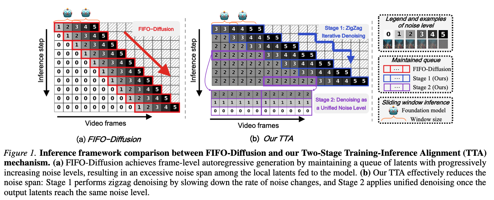
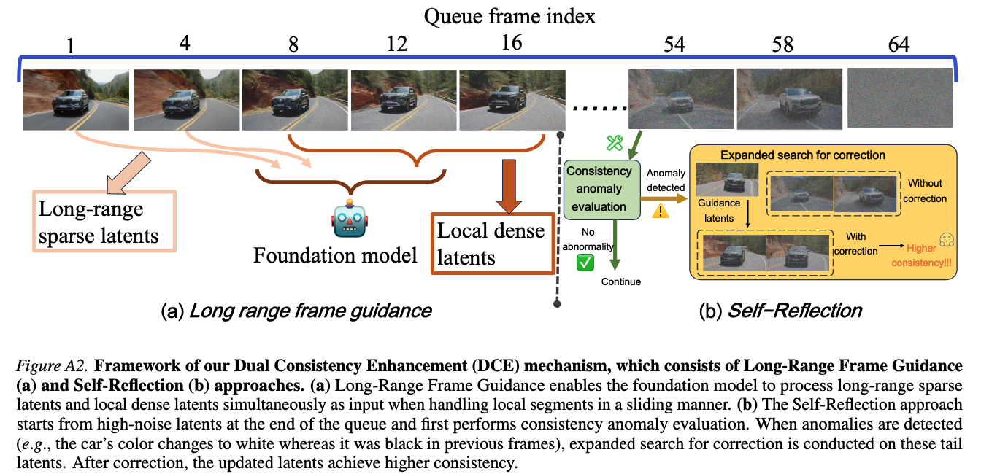

A novel approach to infinite-length video generation with training-inference alignment and dual consistency enhancement
Anonymous Institution | Anonymous Submission
MIGA introduces two core modules to enhance train-free infinite-frame video generation.
Bridging the training-inference gap by reducing excessive noise span

Self-reflection and long-range guidance for temporal consistency
